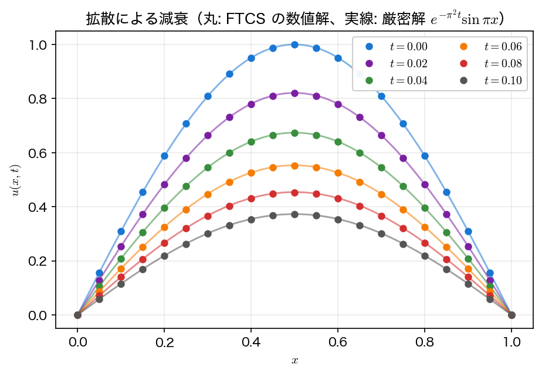
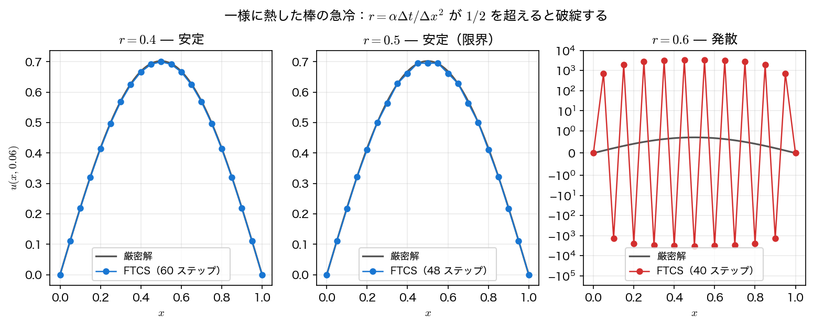

陽解法（FTCS）
線の方法で得た半離散系
に、第4回の前進オイラー法をそのまま当てはめる。これが拡散方程式のもっとも素朴な数値解法であり、時間に前進差分（forward difference in time）、空間に中心差分（centered difference in space）を使うことから、頭文字をとって FTCS 法と呼ばれる。実装はわずか数行だが、時間刻みに厳しい制限がつく。本ページではまず実装と精度を確かめ、その制限を実験で見つける。制限がなぜ出るのかの理論は次々ページで扱う。
前進差分と中心差分
時間・空間ともに等間隔の格子を張る。\(\Delta x=1/N\)、\(x_i=i\Delta x\)（\(i=0,\dots,N\)）、\(\Delta t\)、\(t_n=n\Delta t\) とし、数値解を \(u_i^n\approx u(x_i,t_n)\) と書く。
時間微分をテイラー展開の前進差分で、空間2階微分を第7回と同じ中心差分で置き換える。
これを \(\partial_t u=\alpha \partial_x^2 u\) に代入して \(u_i^{n+1}\) について解けば、更新式
が得られる。無次元量 \(r\) は拡散数（diffusion number）または格子フーリエ数と呼ばれ、以降のすべての議論を支配するただ一つのパラメータである。
この式の性質を確認しておく。
- 陽的（explicit）である：右辺には既知の時刻 \(t_n\) の値しか現れない。連立方程式を解く必要がなく、1ステップの計算量は \(O(N)\)、しかも各点が独立に計算できる（第14回の並列計算で効いてくる性質である）。
- 打ち切り誤差は \(O(\Delta t)+O(\Delta x^2)\)：時間について1次、空間について2次。全体としては精度の低いほうに引きずられる。
- 3点ステンシル：\(u_i^{n+1}\) は1つ前の時刻の3点 \(u_{i-1}^n,u_i^n,u_{i+1}^n\) だけから決まる。したがって1ステップで情報が伝わる距離は \(\Delta x\) に限られる——この局所性が、後で見る安定条件の正体でもある。
更新式を \(u_i^{n+1}=(1-2r)u_i^n+r(u_{i-1}^n+u_{i+1}^n)\) と書き直すと、新しい値が3点の重み付き平均であることが見える。\(r\le1/2\) なら3つの重み \(1-2r,\,r,\,r\) はすべて非負で和が1、つまり新しい値は必ず3点の最大値と最小値の間に入る（最大値原理）。ところが \(r>1/2\) では中央の重み \(1-2r\) が負になり、この保証が失われる。安定条件 \(r\le1/2\) の直感的な意味はここにある。
配列の上書きに注意
更新式の右辺はすべて同じ時刻 \(n\) の値である。1つの配列を左から順に上書きしていくと、\(u_{i-1}\) がすでに新しい時刻の値に書き換わってしまい、別の（誤った、ただし偶然安定な）スキームになる。かならず新旧2本の配列を用意し、全点を計算し終えてから入れ替える。
例題1で精度を見る
例題1（\(u(x,0)=\sin\pi x\)、厳密解 \(e^{-\pi^2t}\sin\pi x\)）を \(N=20\)、\(r=0.4\)（したがって \(\Delta t=r\Delta x^2/\alpha=0.001\)）で解くと、数値解は厳密解の減衰をよく追いかける。\(t=0.1\) での最大誤差は \(1.06\times10^{-3}\) である。

\(r\) を固定したまま \(\Delta x\) を半分にすると、\(\Delta t=r\Delta x^2/\alpha\) は \(1/4\) になる。このとき誤差は \(O(\Delta t)+O(\Delta x^2)=O(\Delta x^2)\) となり、全体で2次収束する。実際サンプルコードの実行結果では、\(N\) を倍にするたびに最大誤差の比が \(4.041\to4.010\to4.003\to4.001\) と \(4\) に収束している。
「\(r\) 固定の細分」は \(\Delta t\) も同時に細かくしている
この2次収束は空間の2次精度だけを見たものではない。\(r\) を固定すると \(\Delta t\propto\Delta x^2\) なので、時間の1次誤差 \(O(\Delta t)\) が \(O(\Delta x^2)\) に化けて、たまたま同じ次数で揃うのである。時間離散化そのものが1次であることを見るには、空間を固定して \(\Delta t\) だけを細かくしなければならない。それは次ページで行う。
安定条件を実験で見つける
FTCS の泣きどころは時間刻みである。例題2（一様に熱した棒の急冷）を \(N=20\) に固定し、\(r\) だけを \(0.4,\,0.5,\,0.6\) と変えて \(t=0.06\) まで解いてみると、結果は劇的に変わる。
| \(r\) | \(\Delta t\) | ステップ数 | \(\max\lvert u\rvert\) | 判定 |
|---|---|---|---|---|
| 0.40 | 0.001000 | 60 | \(6.9986\times10^{-1}\) | 安定 |
| 0.50 | 0.001250 | 48 | \(6.9520\times10^{-1}\) | 安定（限界） |
| 0.60 | 0.001500 | 40 | \(3.2714\times10^{+3}\) | 発散 |
\(r=0.5\) までは厳密解 \(u(0.5,0.06)=0.702200\) に近い妥当な解が得られるのに、\(r\) をわずか2割増やしただけで解は \(10^3\) 倍に膨れ上がる。しかもその破綻の仕方には特徴がある。

発散した解は、なめらかな誤差が一様に大きくなったのではなく、格子点1つおきに符号が反転する波長 \(2\Delta x\) の振動（sawtooth mode, 市松振動）に支配されている。これは偶然ではない。この最短波長の成分を更新式に代入してみよう。\(u_i^n=(-1)^i G^n\) とおくと \(u_{i-1}^n+u_{i+1}^n=-2u_i^n\) なので
となり、\(r>1/2\) で \(\lvert G\rvert>1\)、つまり毎ステップ増幅される。\(r=0.6\) なら \(\lvert G\rvert=1.4\) で、40 ステップ後には \(1.4^{40}\approx7.0\times10^{5}\) 倍である。例題2 は初期条件と境界条件が食い違う不連続問題なので、この最短波長成分が最初から有限の振幅で含まれており、発散は確定的に起こる。なめらかな例題1 であっても、丸め誤差が種になって同じことが起きる。
この \(r\le1/2\) という条件、すなわち
を安定条件と呼ぶ。実用上これは非常に厳しい。\(\Delta x\) を半分にすると \(\Delta t\) は \(1/4\) になり、同じ時刻まで解くのに必要なステップ数は \(\times4\) になる。格子点数も2倍になるので、総計算量は \(\times8\) である。\(N=320\) では \(t=0.1\) まで解くのに 20480 ステップも要る（安定性解析の表を参照）。この制限をどう外すかが、次ページ陰解法の主題である。
サンプルコード
例題1 の時間発展、\(r\) を固定した格子細分（2次収束の確認）、例題2 による安定性の実験を1本にまとめる。
#include <stdio.h>
#include <math.h>
/* 第9回 拡散方程式: 陽解法（FTCS）
例題1: u_t = alpha u_xx, u(0,t)=u(1,t)=0, u(x,0)=sin(pi x), alpha=1
厳密解 u(x,t) = exp(-alpha pi^2 t) sin(pi x)
例題2: 一様に熱した棒 u(x,0)=1 の両端を急に 0 に冷やす。
初期条件と境界条件が両端で食い違うので全波数が励起され、
r = alpha dt/dx^2 > 1/2 の発散が決定的に現れる。 */
static const double PI = 3.14159265358979323846;
static const double ALPHA = 1.0;
/* 例題1 の厳密解 */
static double exact1(double x, double t) {
return exp(-ALPHA*PI*PI*t)*sin(PI*x);
}
/* 例題2 の厳密解（フーリエ級数, 奇数次のみ）
u(x,t) = (4/pi) sum_{n=1,3,5,...} (1/n) exp(-alpha n^2 pi^2 t) sin(n pi x) */
static double exact2(double x, double t) {
double s = 0.0;
for (int n=1;n<=401;n+=2)
s += (4.0/(n*PI))*exp(-ALPHA*(double)n*n*PI*PI*t)*sin(n*PI*x);
return s;
}
/* FTCS を nstep 回進める。u は長さ N+1、両端は 0 に固定。
u_i^{n+1} = u_i^n + r (u_{i-1}^n - 2 u_i^n + u_{i+1}^n) */
static void ftcs(int N, double r, int nstep, double u[N+1]) {
double un[N+1];
for (int n=0;n<nstep;n++){
un[0] = 0.0; un[N] = 0.0;
for (int i=1;i<N;i++)
un[i] = u[i] + r*(u[i-1] - 2.0*u[i] + u[i+1]);
for (int i=0;i<=N;i++) u[i] = un[i]; /* 全点そろえてから入れ替える */
}
}
int main(void) {
/* ---- (1) 時間発展（例題1, N=20, r=0.4）---- */
int N = 20;
double dx = 1.0/N, r = 0.4, dt = r*dx*dx/ALPHA;
double u[N+1];
for (int i=0;i<=N;i++) u[i] = sin(PI*(i*dx));
printf("=== 例題1: u_t = u_xx, u(x,0)=sin(pi x) (N=%d, dx=%.3f, r=%.1f, dt=%.4f) ===\n",
N, dx, r, dt);
printf(" t u(0.5,t) 数値 厳密 exp(-pi^2 t) 最大誤差\n");
printf("-------------------------------------------------------------\n");
FILE *fp = fopen("diffusion_evolution.dat", "w"); /* 作図用 */
if (fp == NULL) { perror("diffusion_evolution.dat"); return 1; }
fprintf(fp, "# t x u u_exact\n");
double t = 0.0;
for (int k=0;k<=5;k++){
if (k>0){ ftcs(N, r, 20, u); t += 20*dt; }
double emax = 0.0;
for (int i=0;i<=N;i++){
double e = fabs(u[i] - exact1(i*dx, t));
if (e>emax) emax = e;
}
printf(" %5.2f %14.8f %14.8f %.3e\n", t, u[N/2], exact1(0.5,t), emax);
for (int i=0;i<=N;i++) /* 断面まるごと書き出す */
fprintf(fp, "%.4f %.10e %.10e %.10e\n", t, i*dx, u[i], exact1(i*dx, t));
}
fclose(fp);
/* ---- (2) メッシュ細分（r を固定して dx を半減）---- */
printf("\n=== メッシュ細分による収束（r=0.4 固定, t=0.1）===\n");
printf(" N dx dt 最大誤差 誤差比\n");
printf("--------------------------------------------------------\n");
int Ns[] = {10,20,40,80,160};
double prev = 0.0;
for (int k=0;k<5;k++){
int Nk = Ns[k];
double dxk = 1.0/Nk, dtk = r*dxk*dxk/ALPHA;
int nstep = (int)lround(0.1/dtk);
double v[Nk+1];
for (int i=0;i<=Nk;i++) v[i] = sin(PI*(i*dxk));
ftcs(Nk, r, nstep, v);
double emax = 0.0;
for (int i=0;i<=Nk;i++){
double e = fabs(v[i] - exact1(i*dxk, 0.1));
if (e>emax) emax = e;
}
printf(" %5d %7.5f %9.7f %.6e", Nk, dxk, dtk, emax);
if (k) printf(" %.3f\n", prev/emax); else printf(" --\n");
prev = emax;
}
printf("\n(r 固定だと dt は dx^2 に比例するので、全体で 2 次: 誤差比は約 4)\n");
/* ---- (3) 安定性: 不連続な初期条件を r を変えて解く ---- */
printf("\n=== 安定性: 一様初期条件 u(x,0)=1 の急冷（N=20, dx=0.05, t=0.06 まで）===\n");
printf(" r dt ステップ max|u| (t=0.06) u(0.5,0.06) 判定\n");
printf("----------------------------------------------------------------------\n");
double rs[] = {0.4, 0.5, 0.6};
FILE *fs = fopen("explicit_stability.dat", "w"); /* 作図用（1列目の r で区別する）*/
if (fs == NULL) { perror("explicit_stability.dat"); return 1; }
fprintf(fs, "# r x u u_exact\n");
for (int k=0;k<3;k++){
int Nk = 20;
double dxk = 1.0/Nk, rk = rs[k], dtk = rk*dxk*dxk/ALPHA;
int nstep = (int)lround(0.06/dtk);
double v[Nk+1];
for (int i=0;i<=Nk;i++) v[i] = 1.0;
v[0] = 0.0; v[Nk] = 0.0;
ftcs(Nk, rk, nstep, v);
double amax = 0.0;
for (int i=0;i<=Nk;i++) if (fabs(v[i])>amax) amax = fabs(v[i]);
printf(" %.2f %8.6f %4d %12.4e %12.4e %s\n",
rk, dtk, nstep, amax, v[Nk/2], (amax<1.0 ? "安定" : "発散"));
for (int i=0;i<=Nk;i++)
fprintf(fs, "%.2f %.10e %.10e %.10e\n", rk, i*dxk, v[i], exact2(i*dxk, 0.06));
}
fclose(fs);
printf("\n厳密解の値: u(0.5, 0.06) = %.6f\n", exact2(0.5, 0.06));
printf("(r <= 1/2 なら安定。r=0.6 では最短波長の成分が毎ステップ 1.4 倍され発散する)\n");
return 0;
}
コンパイル・実行:
実行結果
=== 例題1: u_t = u_xx, u(x,0)=sin(pi x) (N=20, dx=0.050, r=0.4, dt=0.0010) ===
t u(0.5,t) 数値 厳密 exp(-pi^2 t) 最大誤差
-------------------------------------------------------------
0.00 1.00000000 1.00000000 0.000e+00
0.02 0.82040016 0.82086872 4.686e-04
0.04 0.67305642 0.67382545 7.690e-04
0.06 0.55217559 0.55312223 9.466e-04
0.08 0.45300494 0.45404074 1.036e-03
0.10 0.37164533 0.37270784 1.063e-03
=== メッシュ細分による収束（r=0.4 固定, t=0.1）===
N dx dt 最大誤差 誤差比
--------------------------------------------------------
10 0.10000 0.0040000 4.294140e-03 --
20 0.05000 0.0010000 1.062512e-03 4.041
40 0.02500 0.0002500 2.649500e-04 4.010
80 0.01250 0.0000625 6.619528e-05 4.003
160 0.00625 0.0000156 1.654619e-05 4.001
(r 固定だと dt は dx^2 に比例するので、全体で 2 次: 誤差比は約 4)
=== 安定性: 一様初期条件 u(x,0)=1 の急冷（N=20, dx=0.05, t=0.06 まで）===
r dt ステップ max|u| (t=0.06) u(0.5,0.06) 判定
----------------------------------------------------------------------
0.40 0.001000 60 6.9986e-01 6.9986e-01 安定
0.50 0.001250 48 6.9520e-01 6.9520e-01 安定
0.60 0.001500 40 3.2714e+03 -3.2714e+03 発散
厳密解の値: u(0.5, 0.06) = 0.702200
(r <= 1/2 なら安定。r=0.6 では最短波長の成分が毎ステップ 1.4 倍され発散する)
\(r=0.6\) の行で \(\max\lvert u\rvert\) と \(u(0.5,0.06)\) の符号が逆（\(+3.2714\times10^3\) と \(-3.2714\times10^3\)）になっていることに注目してほしい。最大値をとる格子点と中央の格子点は互いに隣り合う位置関係にあり、市松振動が両者の符号を反転させている。数値の破綻には必ず「どの波長が暴れているか」という指紋があり、それを読めば原因を特定できる。
可視化
ftcs.c は2つのファイルを書き出す。diffusion_evolution.dat は例題1 の各出力時刻の断面（1列目 \(t\)、2列目 \(x\)、3列目 数値解、4列目 厳密解）、explicit_stability.dat は例題2 を \(r\) を変えて \(t=0.06\) まで解いた最終断面（1列目 \(r\)、以下 \(x\)、数値解、厳密解）である。標準出力の表は中央の1点と最大誤差だけだが、ファイルには全格子点が入っているので、発散の空間パターンまで見える。
import numpy as np
import matplotlib.pyplot as plt
ev = np.loadtxt("diffusion_evolution.dat") # 列: t, x, u, u_exact
st = np.loadtxt("explicit_stability.dat") # 列: r, x, u, u_exact
fig, (ax1, ax2) = plt.subplots(1, 2, figsize=(11, 4.2))
for t in np.unique(ev[:, 0]):
s = ev[ev[:, 0] == t]
line, = ax1.plot(s[:, 1], s[:, 3], lw=1.2) # 厳密解
ax1.plot(s[:, 1], s[:, 2], "o", ms=4, color=line.get_color(),
label=f"$t = {t:g}$")
ax1.set_xlabel("$x$")
ax1.set_ylabel("$u$")
ax1.set_title("FTCS ($N = 20$, $r = 0.4$)")
ax1.grid(alpha=0.3)
ax1.legend(fontsize=9)
for r in np.unique(st[:, 0]):
s = st[st[:, 0] == r]
ax2.plot(s[:, 1], s[:, 2], "o-", ms=4, label=f"$r = {r:g}$")
s = st[st[:, 0] == st[0, 0]]
ax2.plot(s[:, 1], s[:, 3], "k--", lw=1.2, label="exact")
ax2.set_yscale("symlog", linthresh=1.0) # 発散と厳密解を1枚に収める
ax2.set_xlabel("$x$")
ax2.set_ylabel("$u(x,\\,0.06)$")
ax2.set_title("stability: $r \\leq 1/2$ or not")
ax2.grid(alpha=0.3)
ax2.legend(fontsize=9)
fig.tight_layout()
fig.savefig("ftcs.png", dpi=150)
plt.show()
実行:
左は正弦波の形を保ったまま振幅だけが落ちていく様子、右は \(r=0.6\) だけが格子1点ごとに符号を変える市松振動に覆われる様子である。右の縦軸を symlog にしているのは、\(10^3\) の発散と \(10^{-1}\) の正常解を同時に見るためで、線形目盛だと \(r=0.4,\ 0.5\) の曲線が横軸に張りついて区別できない。
まとめ
- FTCS 法は時間に前進差分、空間に中心差分を当てた陽解法で、更新式は \(u_i^{n+1}=u_i^n+r(u_{i-1}^n-2u_i^n+u_{i+1}^n)\)、\(r=\alpha\Delta t/\Delta x^2\)。
- 実装は数行、1ステップ \(O(N)\)、連立方程式を解く必要がない。各格子点が独立に更新できる。
- 打ち切り誤差は \(O(\Delta t)+O(\Delta x^2)\)。\(r\) を固定して細分すると \(\Delta t\propto\Delta x^2\) なので全体で2次収束する（誤差比 \(\to4\)）。ただし打ち切り誤差の次数がそのまま収束次数になるのは安定条件を満たしている間だけである（ラックスの同値定理）。\(r\) を固定するとは、まさにその条件を守りながら細分するということである。
- 安定条件 \(r\le1/2\)、すなわち \(\Delta t\le\Delta x^2/2\alpha\)。破ると波長 \(2\Delta x\) の市松振動が毎ステップ \(\lvert1-4r\rvert\) 倍されて発散する。
- \(\Delta x\) を半分にすると許される \(\Delta t\) は \(1/4\)、必要ステップ数は4倍、格子点数と合わせて総計算量は8倍。細かい格子ではこの制限が致命的になる。